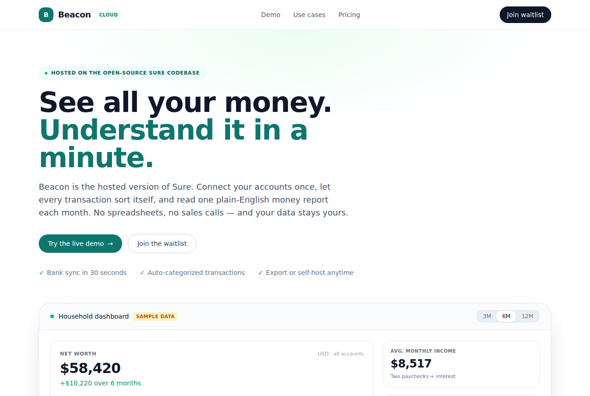

Sure: Self-hosted personal finance app (Maybe fork)
we-promise/sure · ProductivityAGPL-3.0⭐ 12,720

What it is. we-promise/sure is a community fork of the abandoned Maybe Finance app, a full personal finance and wealth management tool. You can run it with Docker, use it from a browser, the macOS desktop app, mobile, API clients, or LLM agents, per the README.
Why it's taking off. The original Maybe team spent most of 2021–2022 building a polished product that even included an "Ask an Advisor" feature with a real CFP/CFA. After spending nearly $1 million on development, they open-sourced it in mid-2023 and briefly tried a hosted version. That didn't work as a B2C subscription, so the codebase is now kept alive by this fork, which has been gaining about 1,000 stars a day.
Where the product opportunity is. The obvious one is a hosted version with bank connections (Plaid and similar), automatic categorization, and monthly financial health reports as a subscription. That is exactly what the original team tried. A smaller, more realistic angle: managed dashboards for small financial advisors or privacy-first power users who want to self-host but pay for setup and support.
Caveats. It's AGPL-3.0, so closed-source hosting is legally risky. Financial data aggregation has real cost and compliance overhead (GLBA and state privacy laws in the US), and the README openly admits performance issues on data-heavy views.
Today's top 5
| # | Repo | Buzz | Startup | Overall |
|---|---|---|---|---|
| 1 | we-promise/sure | 7.0 | 5.5 | 6.8 |
| 2 | Donchitos/Claude-Code-Game-Studios | 8.33 | 6.85 | 6.66 |
| 3 | wangzan101/Mika | 8.67 | 6.65 | 6.56 |
| 4 | anefzaoui/misterdownloadmanager | 7.0 | 4.85 | 6.28 |
| 5 | SirBonney/scrcpy-mirror-control | 7.33 | 6.35 | 6.22 |